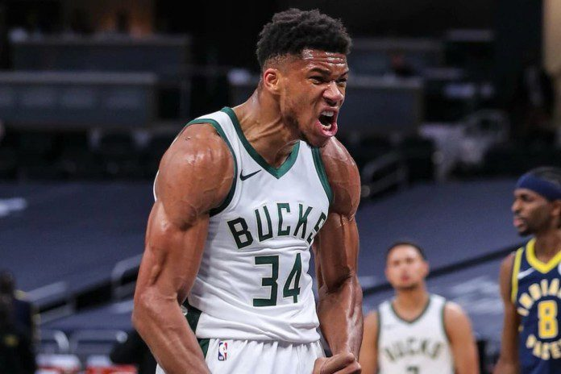
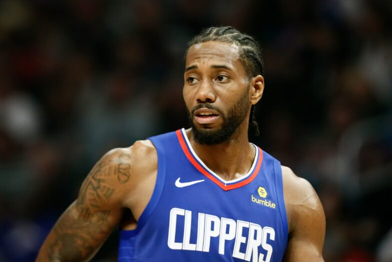

My Favorite NBA Players
Hall of Fame
Steph Curry
American professional basketball player who led the Golden State Warriors of the National Basketball Association (NBA) to championships in 2014 to 2015, 2016 to 2017, and 2017 to 2018 and to the best regular-season record in league history (73-9) in 2015 to 2016. Curry grew up immersed in basketball as a 3 point specialist.
Lebron James
James has won three National Basketball Association (NBA) championships and four NBA MVP awards 2008 to 2009, 2009 to 2010, 2011 to 2012, and 2012 to 2013. He has competed in several men's Olympic basketball tournaments. Today he is widely considered one of the greatest all-around basketball players of all time.
Michael Jordan
Jordan is the greatest scorer the league has ever seen. He won a record 10 scoring titles, and boasted a career average of 30.1 points per game, the most in NBA history. Jordan was also among the greatest winners in NBA history. Michael Jordan is the man who led the Chicago Bulls to 6 series of NBA Finals and championship.
Kyrie Irving
Kyrie Irving fits this mold well. On a team that lacked offensive firepower, Irving was able to score over 18 points a game on a very efficient 47 percent from the field. He has the complete offensive game to be able to attack the defense in a variety of different ways and is a unique scorer and dribbling skills for a point guard.
Kevin Durant
Durant is best known for his prodigious scoring ability. From 2010 to 2014, he won four scoring titles, becoming one of only two players to win four scoring titles in a five-year span. Kevin Durant is one of the best players to ever play the game of Basketball. He has won championships and the NBA's Most Valuable Player award.

Giannis Antetokounmpo
Antetokounmpo was named to the All-NBA Second Team. He was also named the recipient of the NBA Most Improved Player Award for the 2016 to 2017 season, becoming the first player in Bucks history to be named Most Improved Player. Today, Antetokounmpo is the NBA's version of the incredible hulk with strength.
Luca Doncic
Doncic has been on an absolute tear, and to no one's surprise, the overall play of the Mavs has benefited from that. He's averaging 34 points, 10 rebounds and 8 assists over his 10 games while shooting 46 percent from the field and 41 percent from 3 point range. He was named the Western Conference Player of the Month
Devin Booker
In 2017, He became the 6th player in NBA history to score 70 points, the youngest player to ever do so at the age of 20. His stats and leadership on the court for the Phoenix Suns continued to rise through 2018 and 2019. Booker was named an NBA All-Star for the first time in February of 2020. He contribute to his team's success

Kawhi Leonard
He is also the first person to win Finals MVP with a team from each conference. Leonard scored 732 points during the 2019 playoffs. This was the third-best scoring total for a single NBA postseason in league history, behind only LeBron James 748 in 2018 and Michael Jordan 759 in 1992. He is one of the NBA's 75 greatest players.